uDig Walkthrough 2¶


Introduction¶
In this workbook we are going to cover two major topics. The first is a tour of Web Feature Server functionality using a local GeoServer installation. We will use a WFS to edit both feature geometry and feature attributes. We will also show how to export information out of a WFS using both a local shape file and the system clip board.
The rest of the workbook is devoted to working with information. We will create a new feature type by hand, and work with a range of feature creation and editing tools. Finally we will save the result to a new file.
WMS and WFS Integration¶
In this section we will use uDig to display contents from our local Web Feature Server. We will also make use of some of the more interesting selection features.
Start uDig, from the menubar select File ‣ New Map to create a new map.
Make sure your local GeoServer is started and ready to go.
You can run GeoServer from the Start menu.

Navigate to the GeoServer Welcome page: http://localhost:8080/geoserver/
Drag and Drop the WMS 1.1.1 Capabilities link on to your Map.

- This will bring up the Add Data wizard allowing you to choose which Layers
are added to your map.
Select Tasmania state boundaries and Tasmania cities and Press the Finish button.

Move tasmania_cities_Type to the top of your layers view.
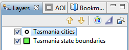Drag and Drop the WFS 1.0.0 Capabilities link on to your Map.

This will bring up a Dialog allowing you to choose which Layers you wish to see.
Select Tasmania roads and Tasmania water bodies and press the Finish button.
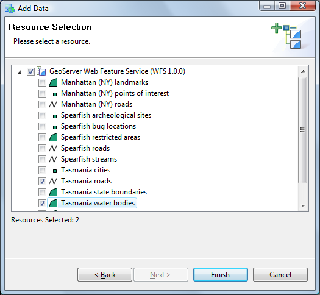Select the Map in the projects view and choose File ‣ Rename menu item.
Rename to Tasmania.

You can compare your map with what is shown by GeoServers layer preview for the Tasmania layer.

Editing Geometry with WFS¶
We will use the Edit Geometry tool to move the road around the lake.
Zoom into the road that is crossing the lake in the center of the country
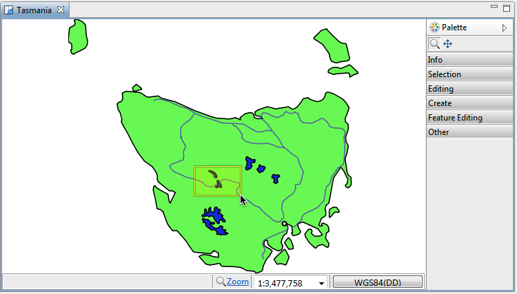Select tasmania_roads_Type in the Layers view.

Change to the Edit Geometry tool from the tool palette (click the Editing drawer to see the available editing tools).
Use the Edit Geometry tool to select the road crossing the lake.

The road will change color and develop “vertex handles”.
Move the vertex handles so the road does not enter the water.
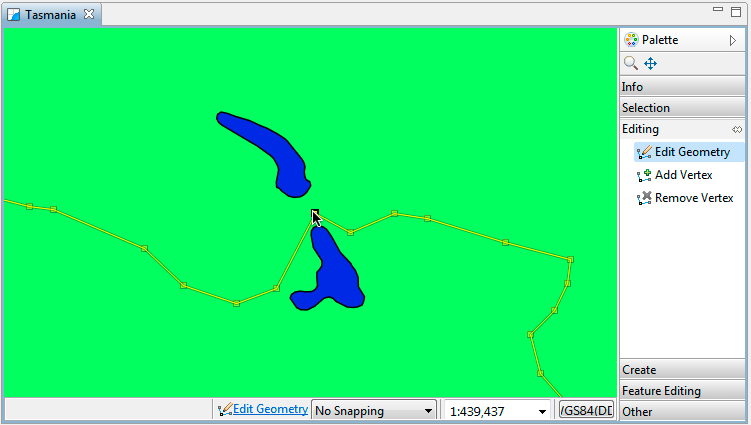Add new vertices by switching to the Add Vertex tool.
You can click any where on the road to add a new vertex.

You can use Undo and Redo in the Edit menu as required.

Press the Commit Changes button in the tool bar to send your changes off to the Web Feature Server.

Your line has now been moved.
You can now refresh your web page to confirm that your changes have been made.
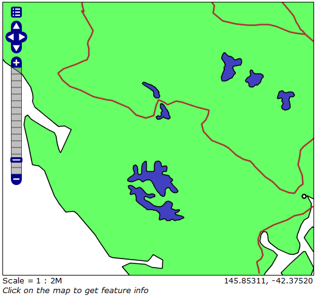You can edit many Features at once, from different layers, or from different sources of data. Pressing Commit Changes will send off all the changes made in the current map.
Working with Attributes¶
In this section you will learn how to edit an Attribute, along the way we will explore the use of styling.
To start out with lets figure out the name of that city:
Select Navigation ‣ Show All from the menu bar.
Select the Tasmanian cities in the Layers View.
Select the Edit ‣ Delete command from the menu bar
In the Catalog view expand the GeoServer Web Feature Service (WFS 1.0.0) entry and select Tasmania cities.

Right Click and select Add to Current Map.
Right click on Tasmania cities in the Layers view, and click on Change Style.
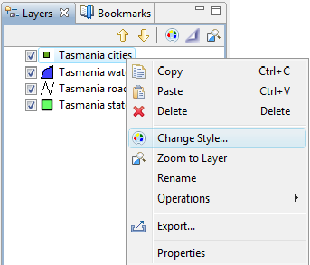This opens the Style Editor dialog.
Define the point shape using style as follow:
Select the Points page from the list on the left hand side of the Style Editor.
Choose Simple Style to access the the built in shapes.
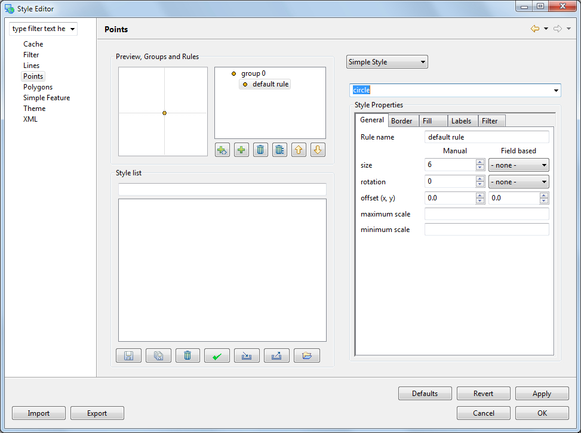Choose circle from the list of built in shapes.
Configure the style properties for labeling:
Click on the Labels tab
Check the enable/disable labeling
Choose CITY_NAME for the label property.
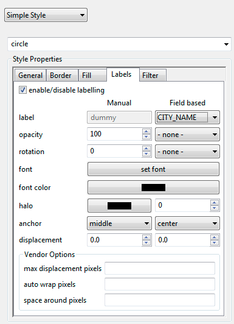After making changes, hit the Apply button to update the map, you can experiment with the settings and press Close when you are finished.
Ensure that Tasmania cities is still selected in the layers view, and select the Table view.
The first time you use table view you will need to accept a warning that all the features will be loaded into memory.

The Table view shows all the features for the current layer.
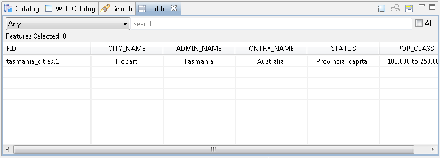Go ahead and rename the city after yourself. Change the CITY_NAME attribute and you can watch the map update.
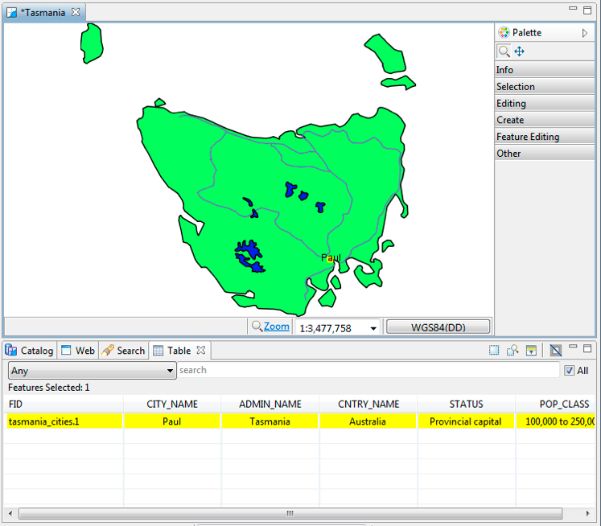Note
Not all aspects of a feature are editable. - bounds are derived from the geometry, and ID is dictated the WFS.
Press the Commit Changes button, in the tool bar, to send your changes off to the Web Feature Server.
Exporting to Shape file¶
In addition to editing content from many sources, you can also export content to a shapefile.
With Tasmania roads selected, choose File ‣ Export from the menu bar
Select the Resource to Shapefile and press Next

Your Tasmania roads layer will be available for export, you can see that it is in the “WGS84” projection.
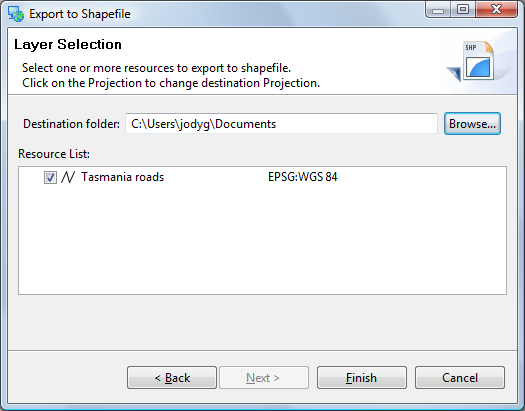Hint
The projection for your data is listed to the right. Click on this value to transform your data into a different projection.
Press Finish to save the file to disk.
Exported files are added to the catalog.

Take a Break!¶
Wow that was a lot of content, lets take a break and go over some ideas you can try at home.
- The OpenLayers application also include the ability to edit, see if you can edit something in the browser and get the change to show up in uDig.
- There are additional Web Feature Servers listed in the Web Catalog. Try downloading some content and seeing what you can learn.
Okay lets move on.
Creating Feature Type¶
We are going to create a new feature type to experiment with some of the more interesting edit tools.
Create a New Map
Rename the map to New Tasmania

Add the tasmanian roads.shp file you created previously. You can drag and drop the file onto the map, or use Layer ‣ Add from the menu bar.
Select the Layer ‣ Create command from the menu bar.

Replace New Feature Type with Lake.

Change the type of the the_geom attribute to MultiPolygon.

Click Add Attribute button.
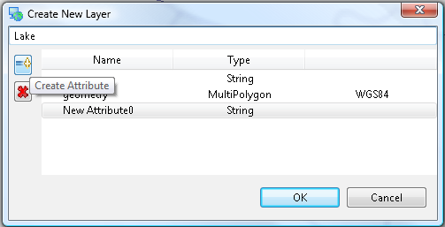Select your new attribute and change the Type to Integer and the Name to type.
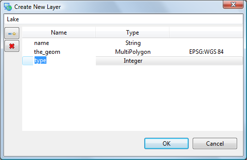Press OK button.
Your layer has been added to the current map
Your data has been added to the Scratch area of the catalog
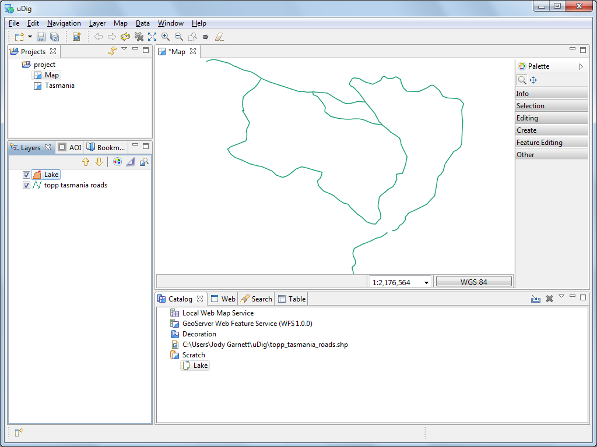
Copying Content¶
Now that we have created a new feature type, we can use cut and paste to grab geometry content from our WFS. This is different from the export we did earlier in that we are using our layer type.
Change to Tasmania map and select Navigation ‣ Zoom AOI in the menu bar.
In the Layers view make sure that tasmania_water_bodies_Type is selected as shown below.

Select Box Selection from the tool palette.
Use the Box Selection tool to draw a box around all the lakes. The lakes will change color when selected.

Select Edit ‣ Copy from Edit menu. These lakes will be placed onto the clipboard.

Switch over to the New Tasmania map. Ensure your select Lake layer is selected in the layer view, and right-click mouse button to select Paste.
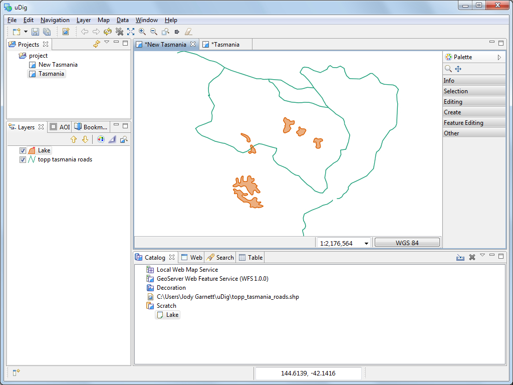Press Commit button to write these new features into your Scratch layer.
Hole Cutter¶
In this section we will cover how to create a hole in a polygon.
Open the New Tasmania map and zoom to lake shown below.
Note
Additional editing tools supplied by the community are available.

Open the Editing drawer of the Palette to show all the edit geometry tools. Select the Hole Cutter tool from the tool palette.
Note
You can use the keyboard short-cut ‘e’ to cycle between the edit tools.

Use the hole cutter to draw a polygon within the lake.

Press Enter, or click on the first vertex, to create the island.
Note
You can press Esc to cancel your edit.
Press the Commit button in the toolbar.
Create Geometry¶
The second category of tools involves creating geometry, we will cover line and polygon creation and “vertex snapping”.
Select tasmanian roads in the layer view.
Choose the Create Line Tool from the Create drawer of the Palette.

Draw a road on the northern part of the island, once again Enter to indicate that you are finished your line.

You have just created a new road, remember to press commit in the tool bar to write your change to the shape file.
Change to the Lake layer in the layer view.
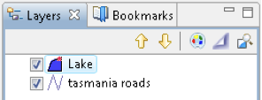Select the Create Polygon Tool.

Enable snapping by pressing CTRL + SHIFT + S until Snap to features in current layer is displayed in a dialog.

Draw a polygon, close to a feature, as you draw close to another polygon you can watch how snapping effects the drawing process.
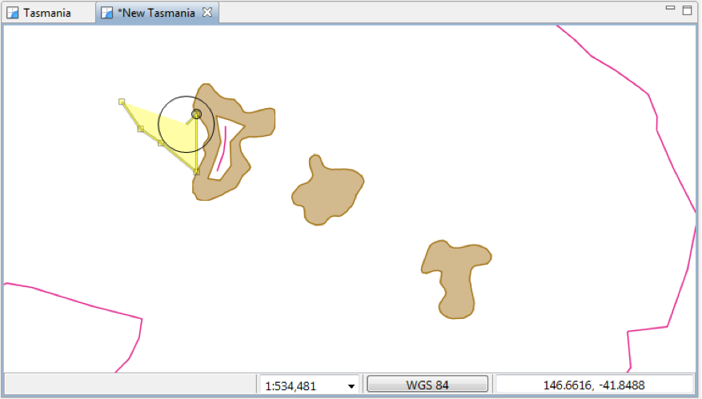You can complete your polygon by ending it on the vertex that started the polygon.
Please press the Commit button in the toolbar.
Changing Snapping Behavior¶
The snapping choices included with uDig are as follows:
| No Snapping | Snapping is turned off by default. |
| Selected Features | Snap to a vertex in a selected feature. |
| Current Layer | Snap to a vertex in the current layer |
| All Layers | Snap to a vertex in any layer |
| Grid | Snap to the nearest grid intersection |
There are three different ways to change the snap behavior:
In the which can be found in the Window ‣ Preferences menu.

While an edit tool is active press CTRL + SHIFT + S. This will cycle through the available snap behaviors. A small pop-up will display the new behavior.
You can see a short cut of the tool snapping options in the tool options along the bottom of the map.
Delete Feature Tool¶
To delete the feature just created select the Delete Feature Tool in the tool palette.
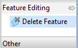Click on the newly created feature and it will be deleted.
Fill Tool¶
The Fill tool fills spaces that are not occupied by existing features.
Select the Fill Area Tool.
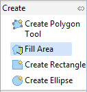Draw a Polygon that goes through some existing features.

Change to the select tool and click on the Polygon to select it. This is in-fact a multi polygon; a single feature made up of separate shapes on the map.

Save¶
We are now going to save the “Scratch” layer we have been working with.
Please press the Save button in the tool bar (or choose save from the File menu).
Ensure that your scratch layer Lake is selected and press Finish.

A new shapefile has been created in the directory indicated, you can see this file in your catalog.

Your map has been updated to use your new layer, you can verify this by right clicking on your Lake layer and checking its Properties.

What to Do Next¶
Where to go from here? Try out the following:
You can use the Reshape operation reorder and rename attributes and even create new ones using simple formulas
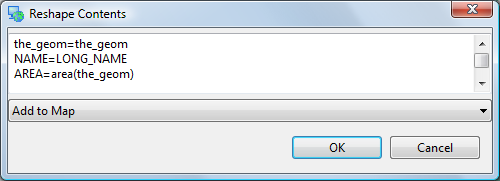Note
Look at the “Common Query Language” (CQL) in the online help for a complete function list.
Enable Advanced Editing Tools in Windows ‣ Preferences and see what ideas the developers are considering. You will need to close and open your map for the settings to take effect.
The uDig community site has additional editing tools. Try out the tools provided by Axios.